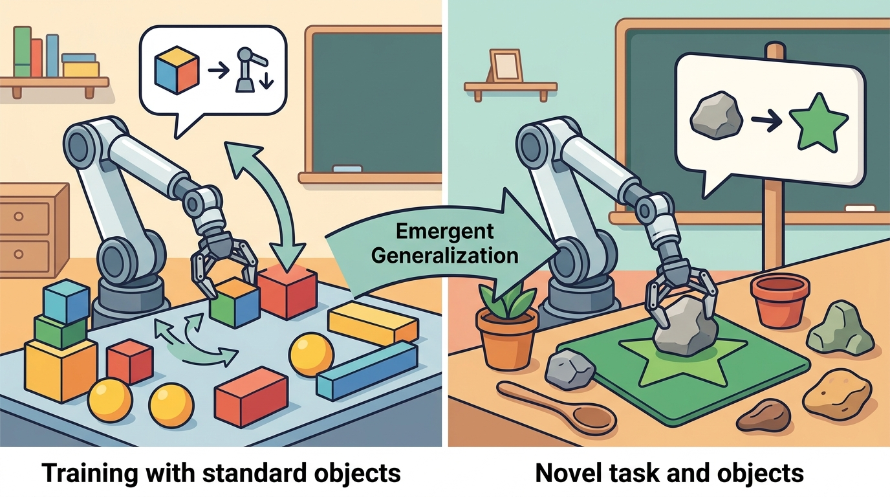

"A robot policy is a promise about the next second of the world."
A Grounded AI Agent

This section assumes familiarity with the VLA architectures introduced in sections 34.2 through 34.4, particularly the action-head designs covered in section 34.5. The evaluation criteria discussed here connect directly to the broader embodied-systems evaluation framework in section 52.3, where success metrics and safety criteria are defined in detail. The limitations identified in this section motivate the action-representation trade-offs examined in section 34.9.
Figure 34.8 gives this page a compact map of the interface. Read it left to right, then check whether the surrounding prose names the same observation, action, and evidence contract.
Build And Evaluation Checklist
Curriculum, depth, and self-containment. VLA evaluation must use construct-matched metrics: same robot, same task panel, same seed policy, same evaluator, and one saved artifact. For Evaluating VLA behavior; limitations and open problems, the practical reading is to pin down the interface, assumptions, concrete example, and failure mode before comparing methods.
Production and evaluation contract. A VLA result is publication-ready only when per-task and per-embodiment slices are visible. For Evaluating VLA behavior; limitations and open problems, treat the diagram, code, table, exercise, warning, and references as one evidence packet: boundary, artifact, tool choice, transfer check, failure mode, and source grounding.
Before accepting a Evaluating VLA behavior; limitations and open problems result, name the loop variable that changed, the tool that makes it reproducible, the failure that would fool the metric, and the source that backs the claim.
For this section, write one evidence row with observation, action, metric, dataset or robot, seed, and failure label. Then explain why comparing that row with a result from a different setup would be invalid.
Use a shared evaluation harness such as LeRobot evaluation scripts or a Gymnasium-style wrapper around the robot task. Shared wrappers keep prompt, observation, action, video, and success metrics synchronized.
VLA evaluation is where semantic impressiveness meets physical honesty. The question is not whether an action trace looks plausible offline, but whether the same policy survives one fixed closed-loop panel with safety, latency, recovery, and embodiment slices still visible.
Evaluation Must Be Closed-Loop
A VLA does not earn trust by producing plausible action tokens on a held-out dataset. It earns trust by acting in a closed loop under fixed, inspectable conditions. The basic metrics are task success, safety violations, time, energy, intervention count, recovery rate, and latency. The deeper question is whether those metrics were co-computed on the same panel of episodes.
Code Fragment 1 gives the evaluation habit this chapter wants: compare policies on the same episodes, with the same seeds, and with all metrics computed in one pass.
# Co-compute success, safety, and latency metrics on one shared evaluation panel.
# This prevents invalid comparisons across different tasks, seeds, or robot setups.
import numpy as np
episodes = np.array([
[1, 0, 180],
[1, 0, 195],
[0, 1, 240],
[1, 0, 210],
])
success = episodes[:, 0].mean()
safety_violation = episodes[:, 1].mean()
latency_ms = episodes[:, 2].mean()
print(f"success={success:.2f}")
print(f"safety_violation={safety_violation:.2f}")
print(f"latency_ms={latency_ms:.1f}")success=0.75 safety_violation=0.25 latency_ms=206.2
episodes array stores success, safety, and latency for the same four rollouts. This is the construct-matched metric pattern: numbers are compared only when they come from one shared evaluation panel.When using LeRobot's eval_policy script, always set --num-eval-episodes to at least 50 rather than accepting the default of 10. With only 10 episodes, a policy that fails under distribution shift roughly 20% of the time will show zero failures in about 11% of runs by chance alone, making a brittle model appear robust. Set the random seed explicitly via --seed and record it alongside the results so the episode panel is exactly reproducible. If compute is limited, 30 episodes split as 10 in-distribution, 10 semantic perturbations, and 10 physical perturbations gives better coverage than 50 homogeneous trials at the same total cost.
Limitations
VLA systems remain brittle in ways that matter for deployment. They can overfit to data collection viewpoints, confuse similar objects, miss small contact events, issue actions outside safe limits, and fail under distribution shift. Their language capability can also create false confidence: a fluent explanation of a failed action does not make the action safe.
RT-2, evaluated on the Google robot arm, produced grammatically correct natural-language rationales for pick-and-place steps even in episodes where the gripper missed the object entirely. The policy's language head and action head are trained with separate losses, so high token-prediction confidence does not imply correct motor output. A human reviewer reading the trace log saw plausible step labels and rated the episode as near-success. Frame-level video review showed the grasp had failed at step 2 of 5. This is the fluency trap: evaluate on video and metric, not on language trace alone.
Do not compare a model tested on curated demonstrations with a model tested on randomized closed-loop trials. The comparison is invalid even if every number is backed by a real artifact. Construct-matched metrics must be computed in one pass on one config, split, robot, and seed panel.
Evaluation Checklist
- Freeze the robot, task, cameras, controller, prompts, and evaluation seeds.
- Run all policy variants on the same episode panel.
- Compute success, safety, latency, interventions, and recovery from the same logs.
- Save failure videos and classify errors by perception, grounding, action representation, control, or evaluation.
- Report vendor claims separately from independently reproduced results.
Algorithm: Construct-Matched VLA Evaluation
Input: Policy set $\Pi = \{\pi_1, \ldots, \pi_K\}$ with parameters $\theta_k$; fixed episode panel $\mathcal{E}$ of $N$ rollouts; random seed $s$; safety threshold $\delta$
Output: Per-policy metric table $M$ with columns (success, safety violation rate, mean latency, intervention count, recovery rate); classified failure log $F$
- Freeze all environment variables: robot, cameras, controller gains, task prompts, and seed $s$. Record the full config hash so the panel $\mathcal{E}$ is exactly reproducible.
- Partition $\mathcal{E}$ into three slices: $\mathcal{E}_\text{in}$ (in-distribution), $\mathcal{E}_\text{sem}$ (semantic perturbations), $\mathcal{E}_\text{phy}$ (physical perturbations).
- For each policy $\pi_k \in \Pi$, run all $N$ episodes with the same seed $s$. Record per-episode tuples $(o_t, a_t, r_t, \text{flag}_t)$ where $a_t = \pi_k(o_t; \theta_k)$ and $\text{flag}_t \in \{0,1\}$ marks safety violations.
- In a single pass over the shared log, compute: $\text{success}_k = \frac{1}{N}\sum_i r_i^{(k)}$, safety violation rate $v_k = \frac{1}{N}\sum_i \text{flag}_i^{(k)}$, mean action latency $\bar{\ell}_k$, intervention count $c_k$, and recovery rate $\rho_k$.
- Assert $v_k \leq \delta$ for deployment candidates; flag any policy with $v_k > \delta$ as unsafe regardless of success rate.
- For each failed episode, classify the root cause into one of five categories: perception error, language grounding error, action-representation mismatch, low-level control failure, or evaluation artifact.
- Save one artifact per policy: metric row in $M$, failure log $F$, and a video clip of the worst-scoring episode from each slice.
- Compare policies only within $M$: all numbers in $M$ were computed in one pass on one config, split, and seed panel. Cross-config comparisons (different $s$, different $\mathcal{E}$) are invalid.
- Report vendor-reported results in a separate column of $M$ labeled "unverified"; mark them verified only after independent replication on the same $\mathcal{E}$ and $s$.
For a pilot VLA experiment, use 30 episodes: 10 in-distribution, 10 semantic perturbations, and 10 physical perturbations. That is not enough for a final paper, but it is enough to catch many false positives before a larger run.
Open Problems
The field still lacks reliable answers to several questions. How should action representations transfer across embodiments? Which data mixtures improve real tasks rather than benchmark scores? How can a VLA know when not to act? How should long-horizon planners hand tasks to low-level VLAs? How do we certify safety when the policy is a large generative model?
Treat evaluating vla behavior; limitations and open problems like a control-room label. If the label does not tell a future debugger what moved, what sensed, or what failed, it is decoration rather than engineering knowledge.
As of June 17, 2026, the VLA frontier is split between open reproducible systems and powerful vendor-reported systems. Open systems such as OpenVLA, openpi, LeRobot, and SmolVLA are easier to audit. Vendor systems such as Gemini Robotics and GR00T N1.5 signal where the field is heading, but their strongest claims need independent replication before they become textbook facts.
A good VLA evaluation should make failure boring to inspect. Every video, metric, seed, prompt, and action trace should point to the same diagnosis.
Expected output: Evaluating VLA behavior; limitations and open problems should leave a reproducible VLA evidence trace with checkpoint, action representation, robot interface, metric, and failure label.
Why is it invalid to compare success rates from two policies if they were evaluated on different episode panels? Give a concrete example.
VLA progress is real, but evaluation decides what kind of progress it is. Closed-loop, construct-matched, failure-aware evaluation is the difference between a demo and a result.
Design an evaluation panel for a VLA that opens drawers. Include in-distribution trials, semantic perturbations, physical perturbations, safety checks, and a rule for classifying failures.
What's Next?
Chapter 35 builds on this chapter by studying robot foundation models and cross-embodiment learning as a broader systems problem.
Li et al. (2024). "Evaluating Real-World Robot Manipulation Policies in Simulation." arXiv.
SIMPLER studies simulation as a proxy for real-world robot policy evaluation. It is relevant for readers designing honest evaluation protocols for VLA systems.
This paper introduced the cross-institution robot data mixture and RT-X models. It is essential for understanding why embodiment metadata, action normalization, and dataset mixture design matter.
Kim et al. (2024). "OpenVLA: An Open-Source Vision-Language-Action Model." arXiv.
OpenVLA connects open VLM backbones to robot action generation and provides a practical codebase for fine-tuning. Practitioners should read it alongside the GitHub repository before adapting an open VLA to a new robot.
Pi-zero point five extends pi-zero through heterogeneous co-training for broader open-world generalization. It is useful for readers studying the frontier between task-specific robot policies and household-scale generalist behavior.
NVIDIA Research (2025). "GR00T N1.5." NVIDIA Research.
NVIDIA presents GR00T N1.5 as an improved humanoid foundation model with stronger generalization and language following than N1. Treat it as an important vendor and research artifact whose claims should be checked against reproducible evaluations.
Gemini Robotics 1.5 is described by Google DeepMind as a VLA model that maps visual information and instructions into motor commands. It is important for frontier context, but readers should distinguish official demonstrations from independently replicated results.
SmolVLA is a compact open VLA designed to run on more accessible hardware and fine-tune on LeRobot datasets. It is the best fit for the chapter hands-on lab because it lowers the barrier to experimentation.